- Co-founded an AI platform that detects hiring fraud for recruiting teams; lead product strategy and AI workflow design.
- Designed the AI workflow that analyzes each candidate across eight fraud signals (identity, career timeline, employer legitimacy, résumé artifacts and more) and fuses them into one auditable trust score.
- Built toward graph-based fraud-ring detection that links candidates sharing résumé templates, IP subnets or shell employers.
Open to AI / ML engineering roles across the US
Hi, I'm Ashlesha.
Hi, I'm Ashlesha.
I build AI agents that actually ship.
Currently building multi-agent RAG systems
AI engineer in Chicago working on multi-agent systems, RAG and LLM tools. M.S. in Artificial Intelligence from Northwestern, and co-founder of Ruvaah.
Multi-agent RAG
LLM fine-tuning
MLOps
01 · About
From messy data to systems that run
I turn data into working AI. Lately that means agents: a multi-agent RAG system that lets teams ask questions across CRM, sales, marketing and finance data, and a recruiting agent that runs a hiring workflow end to end.
Before agents, I worked on computer vision for healthcare and fitness, NLP and LLM fine-tuning, and time series forecasting. I like pairing careful research with hands-on engineering, then shipping something people can use.
0AI roles
0AI projects
0research papers
0startup co-founded
M.S. Artificial IntelligenceNorthwestern University · Sept 2024 – Dec 2025
B.Tech Information TechnologyCummins College of Engineering for Women, Pune · 2020 – 2024
02 · Work
Where I've built things
AI/ML Engineering
Imagit, Inc. · Chicago
- Built Pronto, Imagit's disaster recovery platform, with an AI quote recommendation system that turns client requirements into tailored recovery plan quotes, unifying sales, marketing and finance data in a central CRM.
- Developed a multi-agent RAG system on the Pronto data layer so teams can query CRM, sales, marketing and finance data in plain language.
- Built a technician recruitment agent that sources candidates, sends screening links, evaluates responses and manages onboarding, end to end.
AI Engineering Intern
Arqaios Inc. · Chicago
- Built an MVP for a smart fixture that uses mmWave radar and AI for real-time fall detection and presence awareness in elderly care.
- Designed a hybrid edge-cloud inference pipeline: on-device models for low-latency alerts, cloud streaming for monitoring.
- Worked with hardware and software teams from sensor data collection through training and deployment.
AI Research Intern
Symbiosis Centre for Medical Image Analysis
Statistical shape model to segment femur MRI scans (Scala, Scalismo). Jul – Dec 2023
AI Research Intern
DRDO
ML spam email filter with 99.4% accuracy. Jul – Sep 2022
03 · Projects
Things I've made
04 · Toolbox
What I build with
Agents & LLMs
ML & deep learning
Cloud & MLOps
Languages & tools
05 · Writing & features
Papers, articles, press
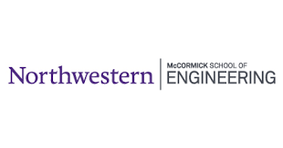
AI Advances in Cancer Care: PulmoScanAI featured by Northwestern
Our practicum with Northwestern Medicine on finding lung tumor bounds in 3D CT scans.
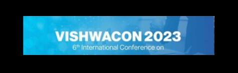
Literature Survey: Sentiment Analysis of Text Documents
A survey of NLP, deep learning and classical approaches to sentiment analysis.
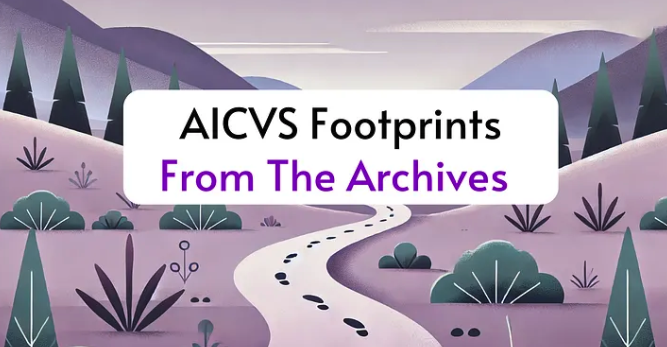
Footprints 3.0: A guide to research internships
Co-authored guide for students going after AI research internships.
06 · Moments
Events, talks and teams

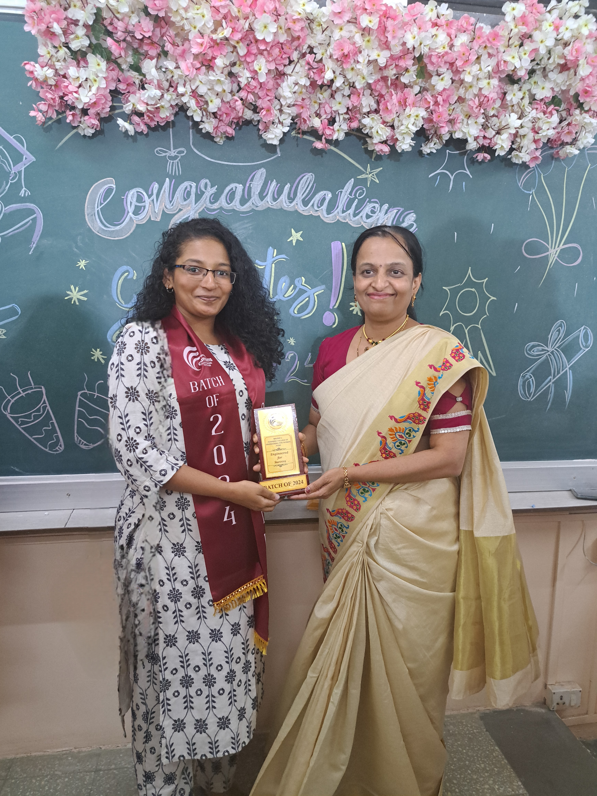
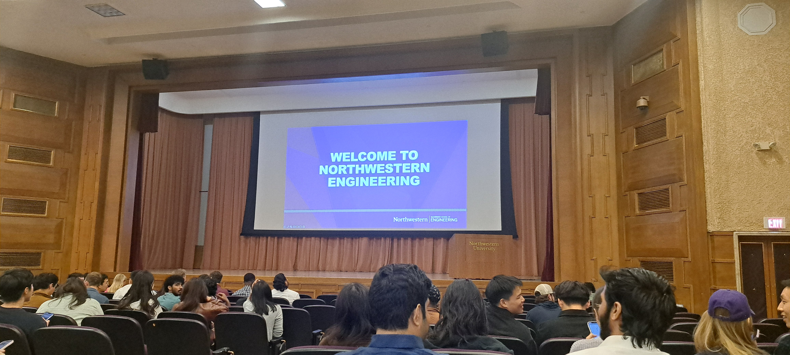
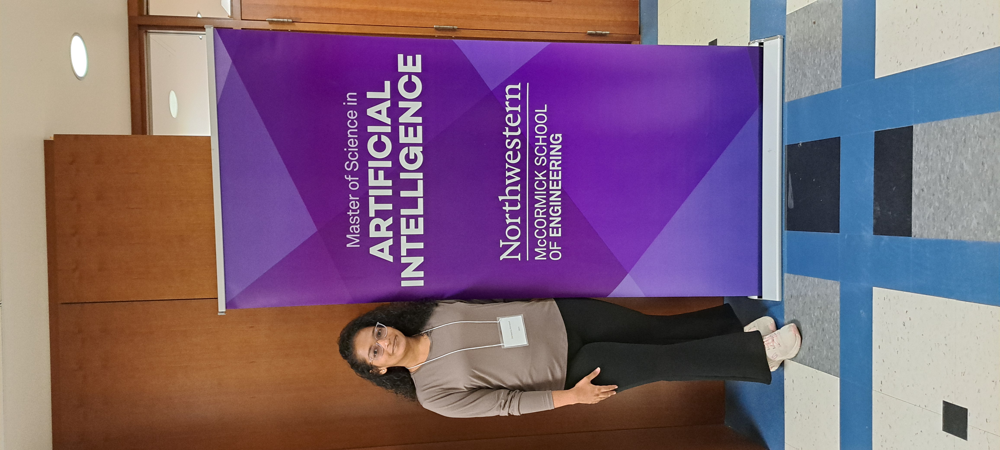
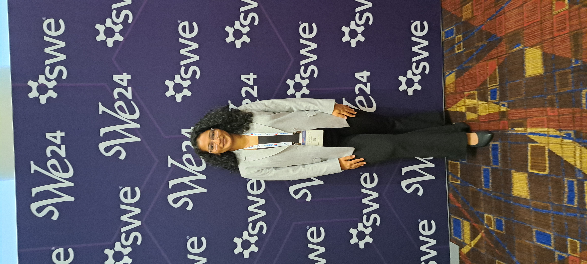
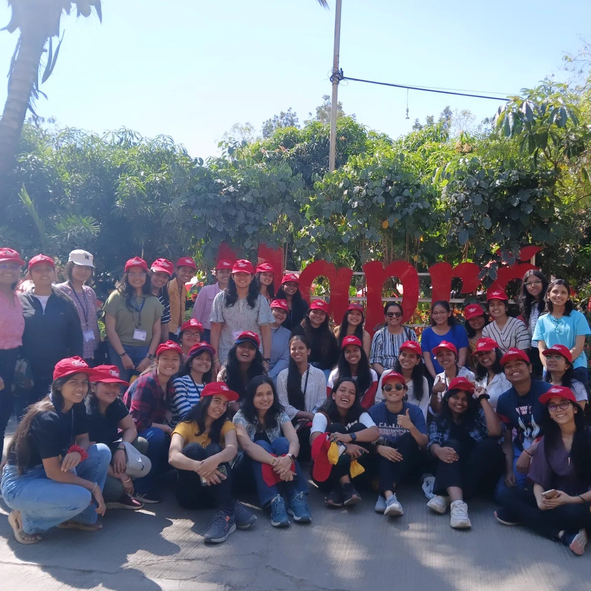
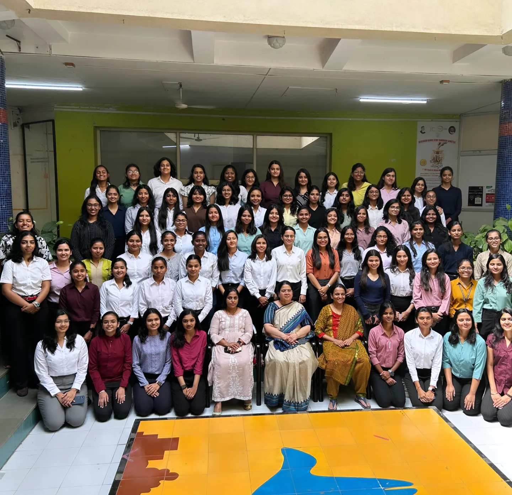
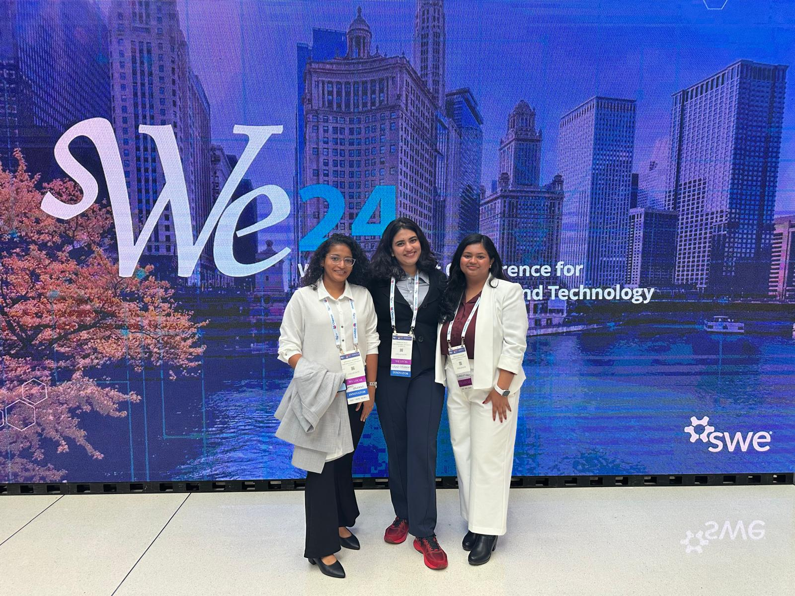
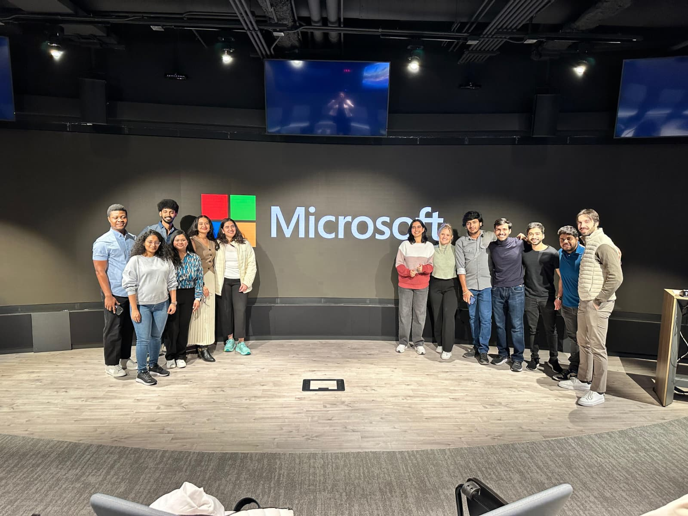
07 · Contact
Let's build something together
Hiring for AI, ML or agent work? Or just want to talk shop? I'm based in Chicago and open to roles anywhere in the US, on-site, hybrid or remote.